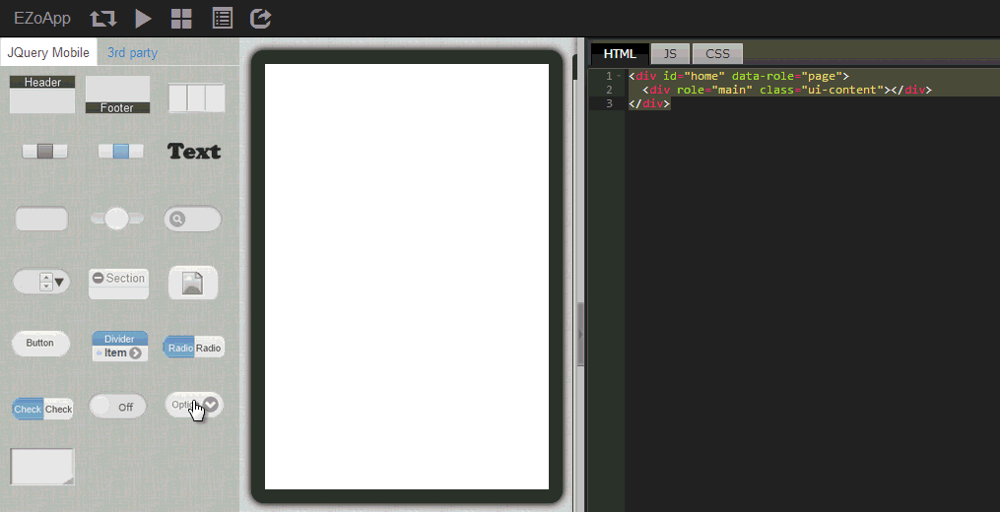
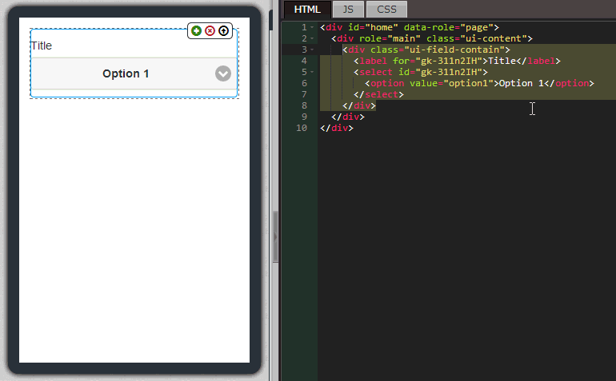
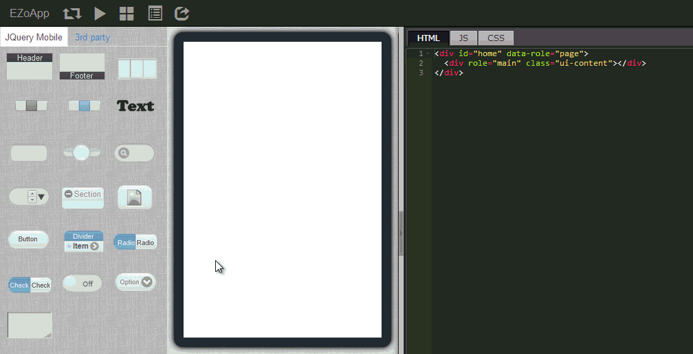

下拉式選單不僅在網頁中很常見，在 App 裡頭也是三不五時就會看到它的身影，而一個與後端資料庫有串接的程式，也一定常常使用到下拉選單來表現諸多的功能和選項。
在 EZoApp 裡頭，下拉選單是以 jQuery Mobile 的元件作為基礎建構，讓大家可以單純使用拖拉的方式，不需要撰寫額外的程式，就能夠設計出下拉式選單，也方便前端和後端的人員互相配合，更可以省下撰寫下拉選單程式的時間，將精力花在更值得關注的細節和功能上。
當然，EZoApp 所使用的下拉選單，都是由 HTML 所撰寫出來的，因此如果大家對於 HTML 有一定程度的基礎，就能夠針對下拉選單做更多的修改和變化，呈現出來的畫面也會更加精采可期！對於 HTML 不熟悉的朋友們，也可以藉由 EZoApp 的雙向互動，了解下拉式選單在 HTML 中呈現的方式，也不失為一個學習的好方法喔！
範例連結：
基本元件實作 - 建立下拉選單

放入下拉選單的方法很簡單，只要從左側拖曳 selectmenu 的元件進入編輯區域即可。
因為是下拉式選單，我們必須要手動新增選單裡頭的選項，新增的方法非常的簡單，幾乎只需要單純的複製貼上即可，我們只要複製程式碼內的 option 標籤，有幾個 option 標籤就有幾個選項，最後別忘記修改 value 與選項的名稱喔！
大家或許會發現，我們在編輯區域可以把下拉選單的元件內容分離，例如把下拉選單拉出虛線框，或是把標題拉出虛線框...等諸如此類，甚至可以把不同的元素經由拖曳的方式組合，但這裡卻發現沒有辦法把下拉選單 selectmenu 和 ListView 組合在一起。 其實不用擔心，由於所有的程式與元件基本上都是 HTML 的語法組成，所以我們只要進行簡單的複製貼上動作，就能夠輕鬆的把不同的元件組合在一起囉！
利用這種方式，我們可以任意的組合元件，不過當然有一個要注意的地方，就是要盡量符合 HTML 的語法規範，避免屆時產生不必要的問題和錯誤。
範例連結：
基本元件實作 - 建立下拉選單